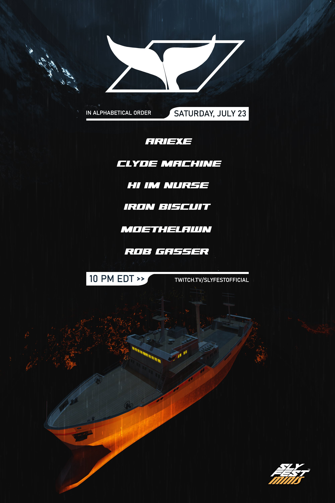

The search continues!
Continuing our adventure to find the missing Captain Sly, the ship has fallen into a whirlpool! Join us for our third and last Sly Fest Mini to find out what happens next!

Continuing our adventure to find the missing Captain Sly, the ship has fallen into a whirlpool! Join us for our third and last Sly Fest Mini to find out what happens next!